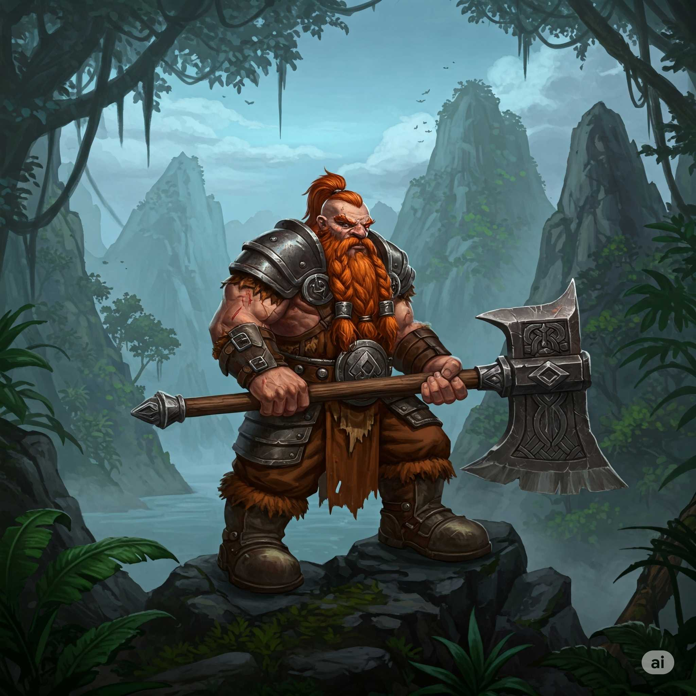
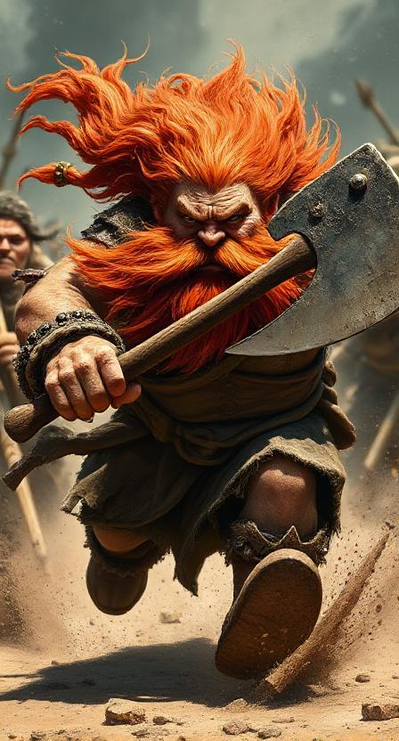

Ivar Ironcliff


Stats
- Class: Unchained Barbarian (Level 4)
- Race: Kitsune
- HP: 72
- AC: 18
Arms and Armor
-
Dwarven Double Waraxe
Damage 1d10; Critical x3; Type slashing; A dwarf treats a dwarven waraxe as a martial weapon even when using it in one hand. A dwarven double waraxe grants a +1 bonus on all attack rolls after the first when using Cleave or Great Cleave.
-
Dagger
Damage 1d4; Critical 19-20/x2; Type piercing or slashing; Range Increment 10 ft. (thrown); You get a +2 bonus on Sleight of Hand skill checks made to conceal a dagger on your body.
-
Hide
Light Armor - Armor Bonus +4
-
Sling
Damage 1d3 (small), 1d4 (medium) Critical x2 Type bludgeoning. Range Increment 50 ft. (projectile). You can hurl ordinary stones with a sling, but stones are not as dense or as round as bullets. Thus, such an attack deals damage as if the weapon were designed for a creature one size category smaller than you and you take a –1 penalty on attack rolls.
-
Healing Potion (Minor) x2
The potion restores 1d8 Hit Points.
Traits and Feats
-
Berserker of the Society
Trait: You may use your rage ability for 3 additional rounds per day.
-
Vengeful
Trait: Whenever you strike the last creature that damaged you in the past 24 hours, you gain a +1 trait bonus on damage rolls against that creature.
-
Power Attack
Combat:You can choose to take a –1 penalty on all melee attack rolls and combat maneuver checks to gain a +2 bonus on all melee damage rolls. This bonus to damage is increased by half (+50%) if you are making an attack with a two-handed weapon, a one handed weapon using two hands, or a primary natural weapon that adds 1-1/2 times your Strength modifier on damage rolls. This bonus to damage is halved (–50%) if you are making an attack with an off-hand weapon or secondary natural weapon.
◦ When your base attack bonus reaches +4, and every 4 points thereafter, the penalty increases by –1 and the bonus to damage increases by +2.
• You must choose to use this feat before making an attack roll, and its effects last until your next turn. The bonus damage does not apply to touch attacks or effects that do not deal hit point damage.
-
Cleave
Combat: As a standard action, you can make a single attack at your full base attack bonus against a foe within reach. If you hit, you deal damage normally and can make an additional attack (using your full base attack bonus) against a foe that is adjacent to the first and also within reach. You can only make one additional attack per round with this feat. When you use this feat, you take a –2 penalty to your Armor Class until your next turn.
Rogue Talents
-
Guarded Life
While raging, if the barbarian is reduced below 0 hit points, 1 hit point of lethal damage per barbarian level is converted to nonlethal damage. If the barbarian is at negative hit points due to lethal damage, she immediately stabilizes.
-
Guarded Stance
The barbarian gains a +1 dodge bonus to her Armor Class against melee attacks for a number of rounds equal to the barbarian’s current Constitution modifier (minimum 1). This bonus increases by +1 for every 6 levels the barbarian has attained. Activating this ability is a move action that does not provoke an attack of opportunity.